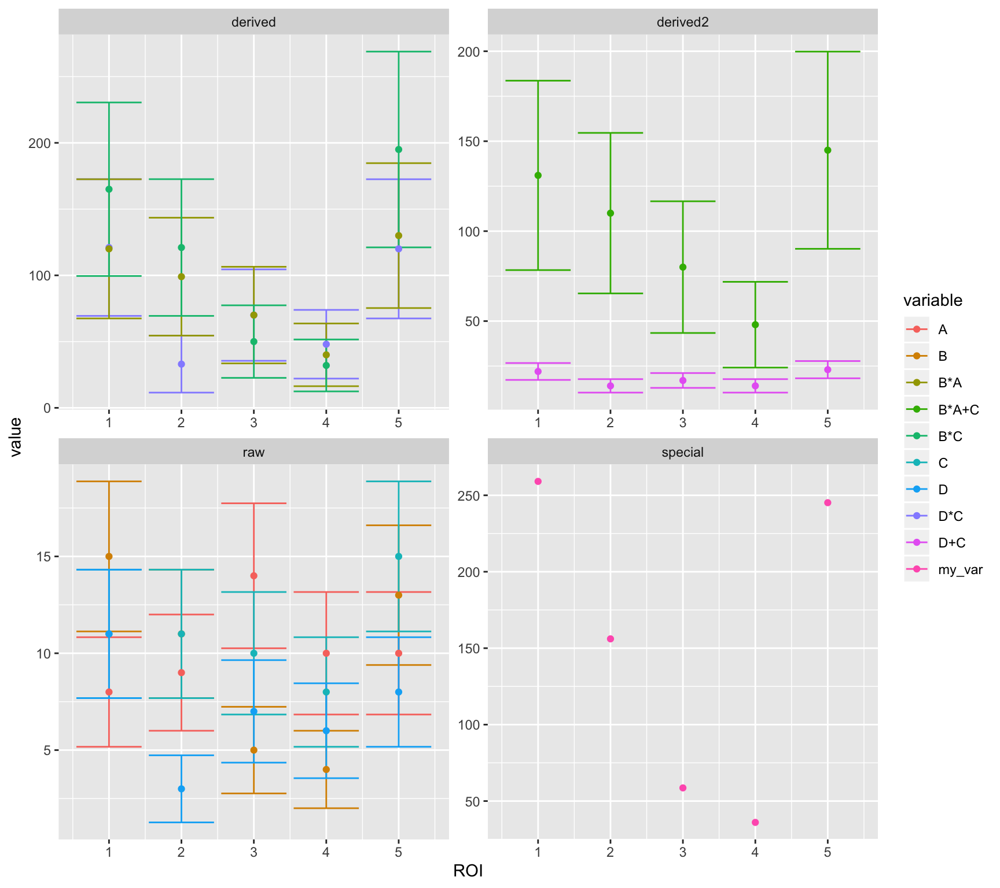

calculate
vignettes/lans2r-calculate.Rmd
lans2r-calculate.RmdThe ?calculate function is intended to make it easy and efficient to calculate sets of derived quantities (e.g. ratios from 13C and 12C data but also from 15N12C and 14N12C data). It allows defining exactly how the derived quantities should be calculated but also makes it possible to calculate derived errors and how to go about naming the newly derived quantities. Due to its structure it allows for a large amount of flexibility to cover all possible use cases. This vignettes illustrates some basic examples how this may be used to calculate derived quantities from measured ion currents. The functions ?calculate_ratios, ?calculate_abundances, ?calculate_sums are all pre-implemented examples of using calculate to achieve a specific task and work out of the box without additional specifications as illustrated in the main vignette.
For simple illustration, this is a completely contrived artifical data set:
set.seed(123) # set random seed
test_data <-
tibble(
ROI = rep(1:5, times = 4),
variable = rep(LETTERS[1:4], each = 5),
value = rpois(20,lambda = 10),
sigma = sqrt(value),
data_type = "raw"
)
kable(test_data, d = 2)| ROI | variable | value | sigma | data_type |
|---|---|---|---|---|
| 1 | A | 8 | 2.83 | raw |
| 2 | A | 9 | 3.00 | raw |
| 3 | A | 14 | 3.74 | raw |
| 4 | A | 10 | 3.16 | raw |
| 5 | A | 10 | 3.16 | raw |
| 1 | B | 15 | 3.87 | raw |
| 2 | B | 11 | 3.32 | raw |
| 3 | B | 5 | 2.24 | raw |
| 4 | B | 4 | 2.00 | raw |
| 5 | B | 13 | 3.61 | raw |
| 1 | C | 11 | 3.32 | raw |
| 2 | C | 11 | 3.32 | raw |
| 3 | C | 10 | 3.16 | raw |
| 4 | C | 8 | 2.83 | raw |
| 5 | C | 15 | 3.87 | raw |
| 1 | D | 11 | 3.32 | raw |
| 2 | D | 3 | 1.73 | raw |
| 3 | D | 7 | 2.65 | raw |
| 4 | D | 6 | 2.45 | raw |
| 5 | D | 8 | 2.83 | raw |
As a first example, using calculate to calculate different column products and propagate the error by standard error propagation (assuming no covariance).
# functions to calculate values and errors and derive names from the names of the variables used
# note that they all have to take the same parameters (even if they are not used)
my_value_fun <- function(x, y, x.err, y.err) x*y
my_error_fun <- function(x, y, x.err, y.err) my_value_fun(x, y, x.err, y.err) * sqrt((x.err/x)^2 + (y.err/y)^2)
my_name_fun <- function(x, y, x.err, y.err) paste0(deparse(substitute(x)), "*", deparse(substitute(y)))
derived_data <-
test_data %>%
calculate(
# data type of the derived quantities (can be anything descriptive)
data_type = "derived",
# which sets of variables to use for calculations
c(D, C, `D sigma`, `C sigma`), c(B, A, `B sigma`, `A sigma`), c(B, C, `B sigma`, `C sigma`),
# the function to make the calculations
value_fun = my_value_fun, error_fun = my_error_fun, name_fun = my_name_fun)## INFO: 15 'derived' values + errors calculated, 15 added (subset: all)
## values added (stored in 'variable' column): 'B*A' (5x), 'B*C' (5x), 'D*C' (5x)| ROI | variable | value | sigma | data_type |
|---|---|---|---|---|
| 1 | A | 8 | 2.83 | raw |
| 2 | A | 9 | 3.00 | raw |
| 3 | A | 14 | 3.74 | raw |
| 4 | A | 10 | 3.16 | raw |
| 5 | A | 10 | 3.16 | raw |
| 1 | B | 15 | 3.87 | raw |
| 2 | B | 11 | 3.32 | raw |
| 3 | B | 5 | 2.24 | raw |
| 4 | B | 4 | 2.00 | raw |
| 5 | B | 13 | 3.61 | raw |
| 1 | C | 11 | 3.32 | raw |
| 2 | C | 11 | 3.32 | raw |
| 3 | C | 10 | 3.16 | raw |
| 4 | C | 8 | 2.83 | raw |
| 5 | C | 15 | 3.87 | raw |
| 1 | D | 11 | 3.32 | raw |
| 2 | D | 3 | 1.73 | raw |
| 3 | D | 7 | 2.65 | raw |
| 4 | D | 6 | 2.45 | raw |
| 5 | D | 8 | 2.83 | raw |
| 1 | D*C | 121 | 51.59 | derived |
| 2 | D*C | 33 | 21.49 | derived |
| 3 | D*C | 70 | 34.50 | derived |
| 4 | D*C | 48 | 25.92 | derived |
| 5 | D*C | 120 | 52.54 | derived |
| 1 | B*A | 120 | 52.54 | derived |
| 2 | B*A | 99 | 44.50 | derived |
| 3 | B*A | 70 | 36.47 | derived |
| 4 | B*A | 40 | 23.66 | derived |
| 5 | B*A | 130 | 54.68 | derived |
| 1 | B*C | 165 | 65.50 | derived |
| 2 | B*C | 121 | 51.59 | derived |
| 3 | B*C | 50 | 27.39 | derived |
| 4 | B*C | 32 | 19.60 | derived |
| 5 | B*C | 195 | 73.89 | derived |
As a second example, build on the derived quantities to generate custom sums (again with standard error propagation):
my_value_fun <- function(x, y, x.err, y.err) x+y
my_error_fun <- function(x, y, x.err, y.err) sqrt(x.err^2 + y.err^2)
my_name_fun <- function(x, y, x.err, y.err) paste0(deparse(substitute(x)), "+", deparse(substitute(y)))
derived_data2 <-
derived_data %>%
calculate(
# data type of the derived quantities (can be anything descriptive)
data_type = "derived2",
# which sets of variables to use for calculations
c(D, C, `D sigma`, `C sigma`), c(`B*A`, `C`, `B*A sigma`, `C sigma`),
# the function to make the calculations
value_fun = my_value_fun, error_fun = my_error_fun, name_fun = my_name_fun)## INFO: 10 'derived2' values + errors calculated, 10 added (subset: all)
## values added (stored in 'variable' column): 'B*A+C' (5x), 'D+C' (5x)| ROI | variable | value | sigma | data_type |
|---|---|---|---|---|
| 1 | A | 8 | 2.83 | raw |
| 2 | A | 9 | 3.00 | raw |
| 3 | A | 14 | 3.74 | raw |
| 4 | A | 10 | 3.16 | raw |
| 5 | A | 10 | 3.16 | raw |
| 1 | B | 15 | 3.87 | raw |
| 2 | B | 11 | 3.32 | raw |
| 3 | B | 5 | 2.24 | raw |
| 4 | B | 4 | 2.00 | raw |
| 5 | B | 13 | 3.61 | raw |
| 1 | C | 11 | 3.32 | raw |
| 2 | C | 11 | 3.32 | raw |
| 3 | C | 10 | 3.16 | raw |
| 4 | C | 8 | 2.83 | raw |
| 5 | C | 15 | 3.87 | raw |
| 1 | D | 11 | 3.32 | raw |
| 2 | D | 3 | 1.73 | raw |
| 3 | D | 7 | 2.65 | raw |
| 4 | D | 6 | 2.45 | raw |
| 5 | D | 8 | 2.83 | raw |
| 1 | D*C | 121 | 51.59 | derived |
| 2 | D*C | 33 | 21.49 | derived |
| 3 | D*C | 70 | 34.50 | derived |
| 4 | D*C | 48 | 25.92 | derived |
| 5 | D*C | 120 | 52.54 | derived |
| 1 | B*A | 120 | 52.54 | derived |
| 2 | B*A | 99 | 44.50 | derived |
| 3 | B*A | 70 | 36.47 | derived |
| 4 | B*A | 40 | 23.66 | derived |
| 5 | B*A | 130 | 54.68 | derived |
| 1 | B*C | 165 | 65.50 | derived |
| 2 | B*C | 121 | 51.59 | derived |
| 3 | B*C | 50 | 27.39 | derived |
| 4 | B*C | 32 | 19.60 | derived |
| 5 | B*C | 195 | 73.89 | derived |
| 1 | D+C | 22 | 4.69 | derived2 |
| 2 | D+C | 14 | 3.74 | derived2 |
| 3 | D+C | 17 | 4.12 | derived2 |
| 4 | D+C | 14 | 3.74 | derived2 |
| 5 | D+C | 23 | 4.80 | derived2 |
| 1 | B*A+C | 131 | 52.64 | derived2 |
| 2 | B*A+C | 110 | 44.62 | derived2 |
| 3 | B*A+C | 80 | 36.61 | derived2 |
| 4 | B*A+C | 48 | 23.83 | derived2 |
| 5 | B*A+C | 145 | 54.82 | derived2 |
To calculate a derived quantity without calculating errors, simply don’t supply an error function. Also illustrated here is a simple way to provide specific variable names and defining the functions in line. Note the use of sum(x) as well, this can easily be used for calculating normalized derived quantities.
derived_data3 <-
derived_data2 %>%
calculate(
# data type of the derived quantities (can be anything descriptive)
data_type = "special",
# which sets of variables to use for calculations
c("my_var", A, B, C),
# the function to make the calculations
value_fun = function(name, x, y, z) x+y^2+z^3/sum(x),
name_fun = function(name, x, y, z) name)## INFO: 5 'special' values + errors calculated, 5 added (subset: all)
## values added (stored in 'variable' column): 'my_var' (5x)| ROI | variable | value | sigma | data_type |
|---|---|---|---|---|
| 1 | A | 8.00 | 2.83 | raw |
| 2 | A | 9.00 | 3.00 | raw |
| 3 | A | 14.00 | 3.74 | raw |
| 4 | A | 10.00 | 3.16 | raw |
| 5 | A | 10.00 | 3.16 | raw |
| 1 | B | 15.00 | 3.87 | raw |
| 2 | B | 11.00 | 3.32 | raw |
| 3 | B | 5.00 | 2.24 | raw |
| 4 | B | 4.00 | 2.00 | raw |
| 5 | B | 13.00 | 3.61 | raw |
| 1 | C | 11.00 | 3.32 | raw |
| 2 | C | 11.00 | 3.32 | raw |
| 3 | C | 10.00 | 3.16 | raw |
| 4 | C | 8.00 | 2.83 | raw |
| 5 | C | 15.00 | 3.87 | raw |
| 1 | D | 11.00 | 3.32 | raw |
| 2 | D | 3.00 | 1.73 | raw |
| 3 | D | 7.00 | 2.65 | raw |
| 4 | D | 6.00 | 2.45 | raw |
| 5 | D | 8.00 | 2.83 | raw |
| 1 | D*C | 121.00 | 51.59 | derived |
| 2 | D*C | 33.00 | 21.49 | derived |
| 3 | D*C | 70.00 | 34.50 | derived |
| 4 | D*C | 48.00 | 25.92 | derived |
| 5 | D*C | 120.00 | 52.54 | derived |
| 1 | B*A | 120.00 | 52.54 | derived |
| 2 | B*A | 99.00 | 44.50 | derived |
| 3 | B*A | 70.00 | 36.47 | derived |
| 4 | B*A | 40.00 | 23.66 | derived |
| 5 | B*A | 130.00 | 54.68 | derived |
| 1 | B*C | 165.00 | 65.50 | derived |
| 2 | B*C | 121.00 | 51.59 | derived |
| 3 | B*C | 50.00 | 27.39 | derived |
| 4 | B*C | 32.00 | 19.60 | derived |
| 5 | B*C | 195.00 | 73.89 | derived |
| 1 | D+C | 22.00 | 4.69 | derived2 |
| 2 | D+C | 14.00 | 3.74 | derived2 |
| 3 | D+C | 17.00 | 4.12 | derived2 |
| 4 | D+C | 14.00 | 3.74 | derived2 |
| 5 | D+C | 23.00 | 4.80 | derived2 |
| 1 | B*A+C | 131.00 | 52.64 | derived2 |
| 2 | B*A+C | 110.00 | 44.62 | derived2 |
| 3 | B*A+C | 80.00 | 36.61 | derived2 |
| 4 | B*A+C | 48.00 | 23.83 | derived2 |
| 5 | B*A+C | 145.00 | 54.82 | derived2 |
| 1 | my_var | 259.10 | NA | special |
| 2 | my_var | 156.10 | NA | special |
| 3 | my_var | 58.61 | NA | special |
| 4 | my_var | 36.04 | NA | special |
| 5 | my_var | 245.18 | NA | special |
This data format makes it easy to have arbitrarily elaborate derived quantities and dynamically include the same calculation for multiple sets of variables. It is also a format that lends itself very well to visualiztion:
library(ggplot2)
derived_data3 %>%
ggplot() +
aes(x = ROI, y = value, ymin = value-sigma, ymax = value+sigma, color = variable) +
geom_errorbar() +
geom_point() +
facet_wrap(~data_type, scales = "free")## Warning: Removed 5 rows containing missing values (geom_errorbar).
Lastly, it can be very useful to have data converted to a wide format with all variables and errors next to each other (e.g. for summary tables or export to Excel). This is easily accomplished with lans2r’s spread_data function:
| ROI | A | B | B*A | B*A+C | B*C | C | D | D*C | D+C | my_var | A sigma | B sigma | B*A sigma | B*A+C sigma | B*C sigma | C sigma | D sigma | D*C sigma | D+C sigma | my_var sigma |
|---|---|---|---|---|---|---|---|---|---|---|---|---|---|---|---|---|---|---|---|---|
| 1 | 8 | 15 | 120 | 131 | 165 | 11 | 11 | 121 | 22 | 259.10 | 2.83 | 3.87 | 52.54 | 52.64 | 65.50 | 3.32 | 3.32 | 51.59 | 4.69 | NA |
| 2 | 9 | 11 | 99 | 110 | 121 | 11 | 3 | 33 | 14 | 156.10 | 3.00 | 3.32 | 44.50 | 44.62 | 51.59 | 3.32 | 1.73 | 21.49 | 3.74 | NA |
| 3 | 14 | 5 | 70 | 80 | 50 | 10 | 7 | 70 | 17 | 58.61 | 3.74 | 2.24 | 36.47 | 36.61 | 27.39 | 3.16 | 2.65 | 34.50 | 4.12 | NA |
| 4 | 10 | 4 | 40 | 48 | 32 | 8 | 6 | 48 | 14 | 36.04 | 3.16 | 2.00 | 23.66 | 23.83 | 19.60 | 2.83 | 2.45 | 25.92 | 3.74 | NA |
| 5 | 10 | 13 | 130 | 145 | 195 | 15 | 8 | 120 | 23 | 245.18 | 3.16 | 3.61 | 54.68 | 54.82 | 73.89 | 3.87 | 2.83 | 52.54 | 4.80 | NA |
| ROI | A | B | B*A | B*A+C | B*C | C | D | D*C | D+C | my_var |
|---|---|---|---|---|---|---|---|---|---|---|
| 1 | 8 | 15 | 120 | 131 | 165 | 11 | 11 | 121 | 22 | 259.10 |
| 2 | 9 | 11 | 99 | 110 | 121 | 11 | 3 | 33 | 14 | 156.10 |
| 3 | 14 | 5 | 70 | 80 | 50 | 10 | 7 | 70 | 17 | 58.61 |
| 4 | 10 | 4 | 40 | 48 | 32 | 8 | 6 | 48 | 14 | 36.04 |
| 5 | 10 | 13 | 130 | 145 | 195 | 15 | 8 | 120 | 23 | 245.18 |